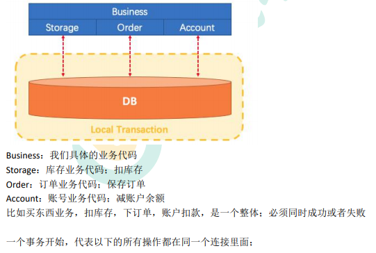
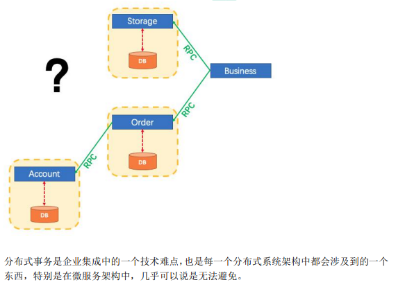
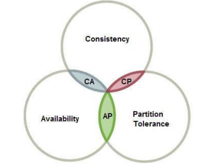
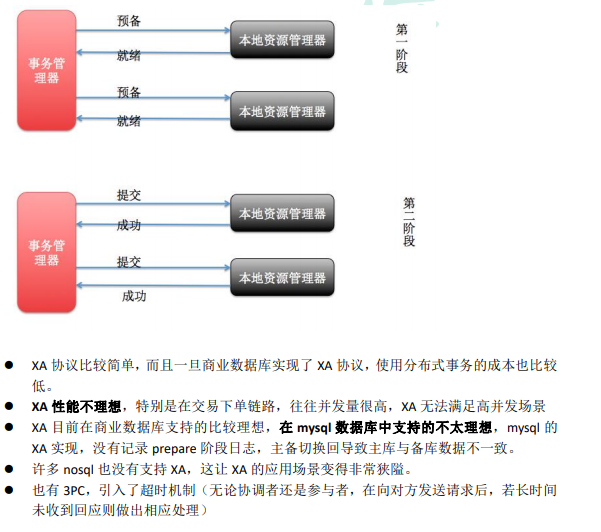
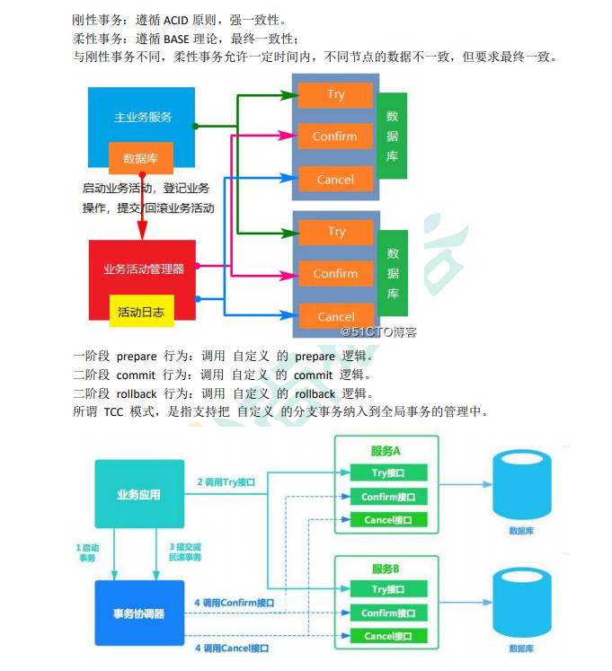
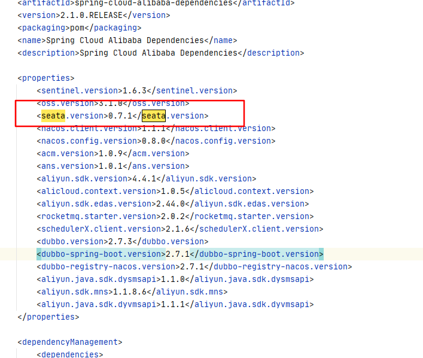
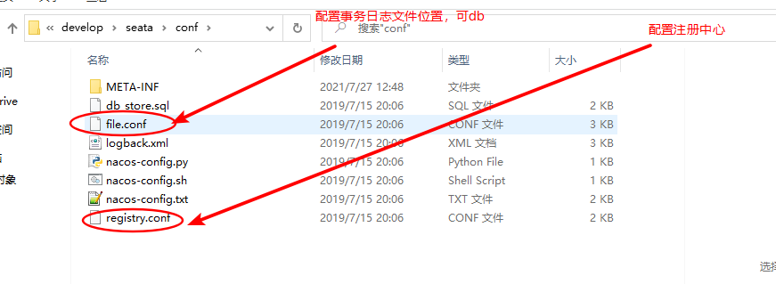
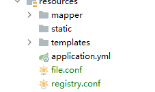

# 一、本地事务
# 1、事务的基本性质
数据库事务的几个特性：原子性 (Atomicity)、一致性 ( Consistency )、隔离性或独立性 ( Isolation) 和持久性 (Durabilily)，简称就是 ACID；
- 原子性：一系列的操作整体不可拆分，要么同时成功，要么同时失败
- 一致性：数据在事务的前后，业务整体一致。
- 转账。A:1000；B:1000； 转 200 事务成功；A：800 B：1200
- 隔离性：事务之间互相隔离。
- 持久性：一旦事务成功，数据一定会落盘在数据库。
在以往的单体应用中，我们多个业务操作使用同一条连接操作不同的数据表，一旦有异常， 我们可以很容易的整体回滚；

# 2、事务的隔离级别
- READ UNCOMMITTED（读未提交）
该隔离级别的事务会读到其它未提交事务的数据，此现象也称之为脏读。 - READ COMMITTED（读提交）
一个事务可以读取另一个已提交的事务，多次读取会造成不一样的结果，此现象称为不可重
复读问题，Oracle 和 SQL Server 的默认隔离级别。 - REPEATABLE READ（可重复读）
该隔离级别是 MySQL 默认的隔离级别，在同一个事务里，select 的结果是事务开始时时间
点的状态，因此，同样的 select 操作读到的结果会是一致的，但是，会有幻读现象。MySQL
的 InnoDB 引擎可以通过 next-key locks 机制（参考下文 "行锁的算法" 一节）来避免幻读。 - SERIALIZABLE（序列化）
在该隔离级别下事务都是串行顺序执行的，MySQL 数据库的 InnoDB 引擎会给读操作隐式
加一把读共享锁，从而避免了脏读、不可重读复读和幻读问题。
# 3、事务的传播行为
1、**PROPAGATION_REQUIRED：** 如果当前没有事务，就创建一个新事务，如果当前存在事务，
就加入该事务，该设置是最常用的设置。
2、**PROPAGATION_SUPPORTS：** 支持当前事务，如果当前存在事务，就加入该事务，如果当
前不存在事务，就以非事务执行。
3、**PROPAGATION_MANDATORY：** 支持当前事务，如果当前存在事务，就加入该事务，如果
当前不存在事务，就抛出异常。
4、**PROPAGATION_REQUIRES_NEW：** 创建新事务，无论当前存不存在事务，都创建新事务。
5、**PROPAGATION_NOT_SUPPORTED：** 以非事务方式执行操作，如果当前存在事务，就把当
前事务挂起。
6、**PROPAGATION_NEVER：** 以非事务方式执行，如果当前存在事务，则抛出异常。
7、**PROPAGATION_NESTED：** 如果当前存在事务，则在嵌套事务内执行。如果当前没有事务，
则执行与 PROPAGATION_REQUIRED 类似的操作。
# 4、SpringBoot 事务关键点
# 1、事务的自动配置
TransactionAutoConfiguration
# 2、事务的坑
在同一个类里面，编写两个方法，内部调用的时候，会导致事务设置失效。原因是没有用到 代理对象的缘故。
解决：
0）、导入 spring-boot-starter-aop
1）、@EnableTransactionManagement(proxyTargetClass = true)
2）、@EnableAspectJAutoProxy(exposeProxy=true)
3）、AopContext.currentProxy () 调用方法
# 5、本地事务回顾
开启 aspectj 动态代理，不开启默认使用 jdk 代理
@EnableAspectJAutoProxy(exposeProxy = true)// 没有接口也可以动态代理 | |
exposeProxy = true // 对外暴漏代理对象 |
@Transactional(timeout = 30) //a 事务 b 会随 a 的超时时间不会用自己的子事务无效 （同一个 service 调用 bc 方法其实还是共用一个事务） | |
public void a(){ | |
// （同一个 service 调用 bc 方法其实还是共用一个事务）用动态代理对象调方法就可以了 | |
OrderServiceImpl o = (OrderServiceImpl) AopContext.currentProxy(); | |
o.b();//a 事务 | |
o.c();// 新事务 （不随 a 回滚） | |
int i = 10 / 0; | |
} | |
@Transactional(propagation = Propagation.REQUIRED,timeout = 2) // 需要一个事务：如果前面有了就公用一个事务 | |
public void b(){} | |
@Transactional(propagation = Propagation.REQUIRES_NEW) // 需要一个新的事务，自己用一个事务 | |
public void c(){} |
# 二、分布式事务
# 1、为什么有分布式事务
分布式系统经常出现的异常
机器宕机、网络异常、消息丢失、消息乱序、数据错误、不可靠的 TCP、存储数据丢失...

# 2、CAP 定理与 BASE 理论
# 1、CAP 定理
CAP 原则又称 CAP 定理，指的是在一个分布式系统中
- 一致性（Consistency）：
- 在分布式系统中的所有数据备份，在同一时刻是否同样的值。（等同于所有节点访
问同一份最新的数据副本）
- 在分布式系统中的所有数据备份，在同一时刻是否同样的值。（等同于所有节点访
- 可用性（Availability）
- 在集群中一部分节点故障后，集群整体是否还能响应客户端的读写请求。（对数据
更新具备高可用性） - 分区容错性（Partition tolerance）
- 大多数分布式系统都分布在多个子网络。每个子网络就叫做一个区（partition）。
分区容错的意思是，区间通信可能失败。比如，一台服务器放在中国，另一台服务
器放在美国，这就是两个区，它们之间可能无法通信。
CAP 原则指的是，这三个要素最多只能同时实现两点，不可能三者兼顾。

一般来说，分区容错无法避免，因此可以认为 CAP 的 P 总是成立。CAP 定理告诉我们， 剩下的 C 和 A 无法同时做到。
分布式系统中实现一致性的 raft 算法、paxos
raft 算法动画：http://thesecretlivesofdata.com/raft/
# 2、面临的问题
对于多数大型互联网应用的场景，主机众多、部署分散，而且现在的集群规模越来越大，所 以节点故障、网络故障是常态，而且要保证服务可用性达到 99.99999%（N 个 9），即保证 P 和 A，舍弃 C。
# 3、BASE 理论
是对 CAP 理论的延伸，思想是即使无法做到强一致性（CAP 的一致性就是强一致性），但可 以采用适当的采取弱一致性，即最终一致性。
BASE 是指
- 基本可用（Basically Available）
- 基本可用是指分布式系统在出现故障的时候，允许损失部分可用性（例如响应时间、
功能上的可用性），允许损失部分可用性。需要注意的是，基本可用绝不等价于系
统不可用。 - 响应时间上的损失：正常情况下搜索引擎需要在 0.5 秒之内返回给用户相应的
查询结果，但由于出现故障（比如系统部分机房发生断电或断网故障），查询
结果的响应时间增加到了 1~2 秒。 - 功能上的损失：购物网站在购物高峰（如双十一）时，为了保护系统的稳定性，
部分消费者可能会被引导到一个降级页面。
- 基本可用是指分布式系统在出现故障的时候，允许损失部分可用性（例如响应时间、
- 软状态（ Soft State）
- 软状态是指允许系统存在中间状态，而该中间状态不会影响系统整体可用性。分布
式存储中一般一份数据会有多个副本，允许不同副本同步的延时就是软状态的体
现。mysql replication 的异步复制也是一种体现。 - 最终一致性（ Eventual Consistency）
- 最终一致性是指系统中的所有数据副本经过一定时间后，最终能够达到一致的状
态。弱一致性和强一致性相反，最终一致性是弱一致性的一种特殊情况。
# 4、强一致性、弱一致性、最终一致性
从客户端角度，多进程并发访问时，更新过的数据在不同进程如何获取的不同策略，决定了 不同的一致性。对于关系型数据库，要求更新过的数据能被后续的访问都能看到，这是强一 致性。如果能容忍后续的部分或者全部访问不到，则是弱一致性。如果经过一段时间后要求 能访问到更新后的数据，则是最终一致性
# 3、分布式事务几种方案
# 1）、2PC 模式
数据库支持的 2PC【2 phase commit 二阶提交】，又叫做 XA Transactions。 MySQL 从 5.5 版本开始支持，SQL Server 2005 开始支持，Oracle 7 开始支持。 其中，XA 是一个两阶段提交协议，该协议分为以下两个阶段：
第一阶段：事务协调器要求每个涉及到事务的数据库预提交 (precommit) 此操作，并反映是
否可以提交。第二阶段：事务协调器要求每个数据库提交数据。
其中，如果有任何一个数据库否决此次提交，那么所有数据库都会被要求回滚它们在此事务
中的那部分信息。

# 2）、柔性事务 - TCC 事务补偿型方案

# 3）、柔性事务 - 最大努力通知型方案
按规律进行通知，** 不保证数据一定能通知成功，但会提供可查询操作接口进行核对。** 这种
方案主要用在与第三方系统通讯时，比如：调用微信或支付宝支付后的支付结果通知。这种
方案也是结合 MQ 进行实现，例如：通过 MQ 发送 http 请求，设置最大通知次数。达到通
知次数后即不再通知。
案例：银行通知、商户通知等（各大交易业务平台间的商户通知：多次通知、查询校对、对
账文件），支付宝的支付成功异步回调
# 4）、柔性事务 - 可靠消息 + 最终一致性方案（异步确保型）
实现：业务处理服务在业务事务提交之前，向实时消息服务请求发送消息，实时消息服务只
记录消息数据，而不是真正的发送。业务处理服务在业务事务提交之后，向实时消息服务确
认发送。只有在得到确认发送指令后，实时消息服务才会真正发送。
防止消息丢失：
/** | |
* 1、做好消息确认机制（pulisher，consumer【手动 ack】） | |
* 2、每一个发送的消息都在数据库做好记录。定期将失败的消息再次发送一 | |
遍 | |
*/ |
# 三、Seata 的使用
文档：http://seata.io/zh-cn/docs/overview/what-is-seata.html
# Seata 2PC-AT 事务模式
# 步骤 1：建立数据库
- 要求：具有 InnoDB 引擎的 MySQL。
注意: 实际上，在示例用例中，这 3 个服务应该有 3 个数据库。 但是，为了简单起见，我们只创建一个数据库并配置 3 个数据源。
# 步骤 2：创建 UNDO_LOG 表
每个需要用 seata 的库都需要建立 undo_log 表
SEATA AT 模式需要 UNDO_LOG 表
-- 注意此处 0.3.0+ 增加唯一索引 ux_undo_log | |
CREATE TABLE `undo_log` ( | |
`id` bigint(20) NOT NULL AUTO_INCREMENT, | |
`branch_id` bigint(20) NOT NULL, | |
`xid` varchar(100) NOT NULL, | |
`context` varchar(128) NOT NULL, | |
`rollback_info` longblob NOT NULL, | |
`log_status` int(11) NOT NULL, | |
`log_created` datetime NOT NULL, | |
`log_modified` datetime NOT NULL, | |
`ext` varchar(100) DEFAULT NULL, | |
PRIMARY KEY (`id`), | |
UNIQUE KEY `ux_undo_log` (`xid`,`branch_id`) | |
) ENGINE=InnoDB AUTO_INCREMENT=1 DEFAULT CHARSET=utf8; |
# 步骤 3：为示例业务创建表
# 步骤 4: 启动服务
- 从 https://github.com/seata/seata/releases, 下载服务器软件包，将其解压缩。
# 步骤 5：添加 seata 依赖
<dependency> | |
<groupId>com.alibaba.cloud</groupId> | |
<artifactId>spring-cloud-starter-alibaba-seata</artifactId> | |
</dependency> 对应版本号下载对应的服务器软件包 |

对应服务器包的版本也应该是 0.7.1
# 步骤 6：配置软件包

registry.conf
registry { | |
# file 、nacos 、eureka、redis、zk、consul、etcd3、sofa type指定用什么注册中心 并配置对应注册中心地址 | |
type = "nacos" | |
nacos { | |
serverAddr = "localhost:8848" | |
namespace = "public" | |
cluster = "default" | |
} | |
eureka { | |
serviceUrl = "http://localhost:1001/eureka" | |
application = "default" | |
weight = "1" | |
} | |
redis { | |
serverAddr = "localhost:6379" | |
db = "0" | |
} | |
zk { | |
cluster = "default" | |
serverAddr = "127.0.0.1:2181" | |
session.timeout = 6000 | |
connect.timeout = 2000 | |
} | |
consul { | |
cluster = "default" | |
serverAddr = "127.0.0.1:8500" | |
} | |
etcd3 { | |
cluster = "default" | |
serverAddr = "http://localhost:2379" | |
} | |
sofa { | |
serverAddr = "127.0.0.1:9603" | |
application = "default" | |
region = "DEFAULT_ZONE" | |
datacenter = "DefaultDataCenter" | |
cluster = "default" | |
group = "SEATA_GROUP" | |
addressWaitTime = "3000" | |
} | |
file { | |
name = "file.conf" | |
} | |
} | |
config { | |
# file、nacos 、apollo、zk、consul、etcd3 seata的配置信息 | |
type = "file" | |
nacos { | |
serverAddr = "localhost" | |
namespace = "public" | |
cluster = "default" | |
} | |
consul { | |
serverAddr = "127.0.0.1:8500" | |
} | |
apollo { | |
app.id = "seata-server" | |
apollo.meta = "http://192.168.1.204:8801" | |
} | |
zk { | |
serverAddr = "127.0.0.1:2181" | |
session.timeout = 6000 | |
connect.timeout = 2000 | |
} | |
etcd3 { | |
serverAddr = "http://localhost:2379" | |
} | |
file { | |
name = "file.conf" | |
} | |
} |
file.conf
transport { | |
# tcp udt unix-domain-socket | |
type = "TCP" | |
#NIO NATIVE | |
server = "NIO" | |
#enable heartbeat | |
heartbeat = true | |
#thread factory for netty | |
thread-factory { | |
boss-thread-prefix = "NettyBoss" | |
worker-thread-prefix = "NettyServerNIOWorker" | |
server-executor-thread-prefix = "NettyServerBizHandler" | |
share-boss-worker = false | |
client-selector-thread-prefix = "NettyClientSelector" | |
client-selector-thread-size = 1 | |
client-worker-thread-prefix = "NettyClientWorkerThread" | |
# netty boss thread size,will not be used for UDT | |
boss-thread-size = 1 | |
#auto default pin or 8 | |
worker-thread-size = 8 | |
} | |
shutdown { | |
# when destroy server, wait seconds | |
wait = 3 | |
} | |
serialization = "seata" | |
compressor = "none" | |
} | |
service { | |
#vgroup->rgroup | |
vgroup_mapping.my_test_tx_group = "default" | |
#only support single node | |
default.grouplist = "127.0.0.1:8091" | |
#degrade current not support | |
enableDegrade = false | |
#disable | |
disable = false | |
#unit ms,s,m,h,d represents milliseconds, seconds, minutes, hours, days, default permanent | |
max.commit.retry.timeout = "-1" | |
max.rollback.retry.timeout = "-1" | |
} | |
client { | |
async.commit.buffer.limit = 10000 | |
lock { | |
retry.internal = 10 | |
retry.times = 30 | |
} | |
report.retry.count = 5 | |
} | |
## transaction log store 事务日志存在哪里 | |
store { | |
## store mode: file、db | |
mode = "file" | |
## file store | |
file { | |
dir = "sessionStore" | |
# branch session size , if exceeded first try compress lockkey, still exceeded throws exceptions | |
max-branch-session-size = 16384 | |
# globe session size , if exceeded throws exceptions | |
max-global-session-size = 512 | |
# file buffer size , if exceeded allocate new buffer | |
file-write-buffer-cache-size = 16384 | |
# when recover batch read size | |
session.reload.read_size = 100 | |
# async, sync | |
flush-disk-mode = async | |
} | |
## database store 数据库配置 global_table branch_table branch_table 对应外面的db_store.sql | |
db { | |
## the implement of javax.sql.DataSource, such as DruidDataSource(druid)/BasicDataSource(dbcp) etc. | |
datasource = "dbcp" | |
## mysql/oracle/h2/oceanbase etc. | |
db-type = "mysql" | |
url = "jdbc:mysql://127.0.0.1:3306/seata" | |
user = "mysql" | |
password = "mysql" | |
min-conn = 1 | |
max-conn = 3 | |
global.table = "global_table" | |
branch.table = "branch_table" | |
lock-table = "lock_table" | |
query-limit = 100 | |
} | |
} | |
lock { | |
## the lock store mode: local、remote | |
mode = "remote" | |
local { | |
## store locks in user's database | |
} | |
remote { | |
## store locks in the seata's server | |
} | |
} | |
recovery { | |
committing-retry-delay = 30 | |
asyn-committing-retry-delay = 30 | |
rollbacking-retry-delay = 30 | |
timeout-retry-delay = 30 | |
} | |
transaction { | |
undo.data.validation = true | |
undo.log.serialization = "jackson" | |
} | |
## metrics settings | |
metrics { | |
enabled = false | |
registry-type = "compact" | |
# multi exporters use comma divided | |
exporter-list = "prometheus" | |
exporter-prometheus-port = 9898 | |
} |
异常
org.springframework.beans.factory.BeanCreationException: Error creating bean with name 'globalTransactionScanner' defined in class path resource [com/alibaba/cloud/seata/GlobalTransactionAutoConfiguration.class]: Bean instantiation via factory method failed; nested exception is org.springframework.beans.BeanInstantiationException: Failed to instantiate [io.seata.spring.annotation.GlobalTransactionScanner]: Factory method 'globalTransactionScanner' threw exception; nested exception is io.seata.common.exception.NotSupportYetException: not support register type: null
原因是因为导入了 seata，而 seata 接管事务是需要我们配置的，要不然 seata 拿不到配置的数据源则会报 null，不需要的排除 seata 就行，引用的需要配置
# 注意：
所有想要用到分布式事务的微服务使用 seata DataSourceProxy 代理自己的数据源
# 步骤 7：配置
首先需要导入软件包中的两个配置文件到需要使用 seata 的服务的配置下

并修改如下配置
file.conf
service { | |
#vgroup->rgroup | |
vgroup_mapping.gulimall-order-fescar-service-group = "default" // 此处 gulimall-order - 为服务的名字需要与 yml 配置文件的 applicationname 相同 | |
#only support single node | |
default.grouplist = "127.0.0.1:8091" | |
#degrade current not support | |
enableDegrade = false | |
#disable | |
disable = false | |
#unit ms,s,m,h,d represents milliseconds, seconds, minutes, hours, days, default permanent | |
max.commit.retry.timeout = "-1" | |
max.rollback.retry.timeout = "-1" | |
} |
为 seata 配置接管事务，用 DataSourceProxy 去代理事务（必须配置，否则导入 seata 在 spring 容器中进行加载 seata 配置 的时候为报错）
/** | |
* @author WangXuefeng | |
* @version 1.0 | |
* @date 2021/7/27 13:34 | |
* @description | |
*/ | |
@Configuration | |
public class MySeataConfig { | |
/** | |
* | |
* 获取数据源配置，springboot 把数据原所有配置封装到了 DataSourceProperties 中 | |
*/ | |
@Autowired | |
DataSourceProperties dataSourceProperties; | |
/** | |
* 配置 seata 接管原先我们的数据源，此处用的是 springboot 默认的 HikariDataSource 数据原， | |
* 我们需要将数据源交给 DataSourceProxy 也就 seata 代理 | |
* @param dataSourceProperties | |
* @return | |
*/ | |
@Bean | |
public DataSource dataSource(DataSourceProperties dataSourceProperties){ | |
HikariDataSource hikariDataSource = dataSourceProperties.initializeDataSourceBuilder().type(HikariDataSource.class).build(); | |
if (StringUtils.hasText(dataSourceProperties.getName())) { | |
hikariDataSource.setPoolName(dataSourceProperties.getName()); | |
} | |
return new DataSourceProxy(hikariDataSource); | |
} | |
} |
# 步骤 8：加全局注解
@GlobalTransactional // 在主事务上加 |
问题：不适合高并发场景（因为 AT 模式需要加很多锁，所以高并发性能很低）
# 高并发方式分布式
分布式事务几种方案中的 3 和 4 柔性事务最终一致性
使用消息中间来完成业务逻辑
RabbitMQ:https://oxyzen-wxf.github.io/database/msg/rabbitmq-1/